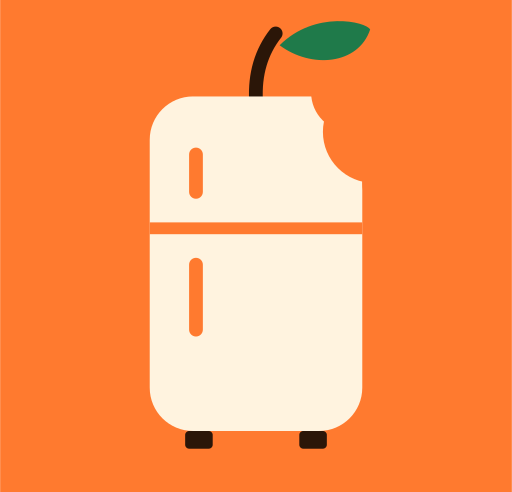
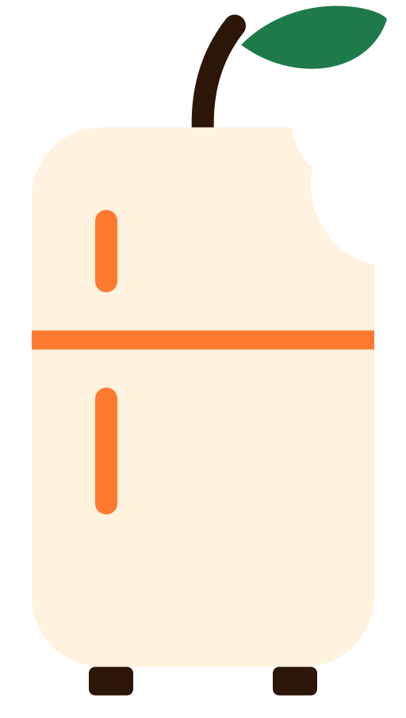

fuorisaverIl salvatore
del fuorisede.
Fotografi quello che compri, fuorisaver capisce cos'è, stima la scadenza e ti avvisa prima che butti via soldi e cibo. Tutto in locale.
Non è il cibo che dimentichiamo.
È il momento in cui scade.
del cibo prodotto nel mondo non arriva mai nel piatto. La maggior parte dello spreco avviene in casa.
Comprare è facile.
Offerte e spesa settimanale riempiono il frigo. Non la memoria.
Dimenticare è silenzioso.
Fuori sede si cucina per sé, a orari strani. La zucchina non manda notifiche dal fondo del cassetto.
Buttare è la conseguenza.
Cibo, soldi e tempo finiscono nello stesso sacco. Le app di inventario chiedono di compilare tutto a mano: per questo non le usa nessuno.
Il dato c'è già.
Basta leggerlo.
Cosa hai comprato
Nomi, quantità, prezzi e data d'acquisto. Una foto e le righe diventano prodotti.
Quando scade
La data vera, letta dalla confezione. E la differenza tra "da consumare" e "preferibilmente entro".
Cos'è, in che stato
Nome, categoria e stato: chiuso, aperto, cotto o congelato. Anche il codice a barre.
Quattro modi per riempire il frigo.
Zero digitazione.
Foto prodotto
Una foto al pacco. Gemma riconosce nome, categoria e stato. Il codice a barre, se c'è, completa i dettagli.
Foto etichetta
La data di scadenza letta dalla confezione, normalizzata dal codice. Sostituisce la stima con un dato certo.
Codice a barre
EAN dalla foto, validato col checksum, e nome, marca e categoria da Open Food Facts.
Scontrino (beta)
Una foto e tutta la spesa entra in blocco, con prezzi e scadenze stimate. Le voci non alimentari vengono filtrate.
Il modello propone. Tu confermi — con la confidenza in vista.
Il frigo, a colpo d'occhio.
Inventario
oggiRosso entro 2 giorni o già scaduto, giallo entro 5, verde oltre.
Segni consumato ✓ o buttato ⌫, e lo spreco diventa una cifra in euro.
Propone cosa cucinare partendo da ciò che sta per scadere.
Notifiche opzionali via ntfy per i prodotti urgenti.
Il modello estrae. Il codice decide.
La persona conferma.
Estrae e classifica
Dalla foto ricava nome, categoria, stato e una confidenza. Non inventa date: se le vede, le copia.
Normalizza e calcola
Il parser delle date legge molti formati. La tabella shelf_life.yaml (ispirata a USDA FoodKeeper) stima la durata per categoria e stato.
Conferma
Ogni inserimento passa da un form modificabile, con la confidenza del modello in vista. La sicurezza alimentare resta una decisione umana.
Una data, tre livelli di affidabilità.
Letta dall'etichetta
La data vera stampata sulla confezione, quando la fotografi.
Corretta da te
Quando sai qualcosa in più del modello, l'ultima parola è la tua.
Stimata dalla tabella
Acquisto + durata tipica per categoria e stato. In UI è marcata come “circa”.
12/10/2612.10.202612 OTT 2026L:2610ALa foto conferma. Il catalogo completa.
OpenCV decodifica l'EAN dalla foto. Il codice viene validato col checksum, poi arricchito da Open Food Facts: nome, marca, confezione e categoria.
1 · La foto
Provi più risoluzioni e un blur leggero per far leggere il codice al detector.
2 · L'EAN
8, 12 o 13 cifre, con checksum verificato: niente letture fantasma.
3 · Open Food Facts
Prodotto trovato → nome, marca e categoria reali. Non trovato → si resta sulla stima.
Le foto del tuo frigo restano a casa.
Le foto del frigo sono dati personali. Non hanno bisogno di un cloud: girano sul dispositivo, con Ollama.
Tutto sul dispositivo
Foto, stime e inventario restano in locale. Nessun upload, nessun account.
Zero costi per token
Il modello gira sul tuo ferro, non a consumo. Nessuna bolletta API.
Funziona in LAN
Lo apri dal telefono in cucina, mentre il portatile è in un'altra stanza.

local-first foto · stime · datiPiccole scelte che lo rendono credibile.
Deterministico dove serve
Le date le calcola il codice, non il modello. Stessa foto, stessa risposta.
Umano nel loop
Nessun salvataggio automatico: si conferma sempre prima di scrivere in inventario.
Incertezza esplicita
Una stima è dichiarata "circa". Chiamiamo stima una stima, non una data certa.
Testabile
Test unitari su date, shelf-life, barcode e database. Il comportamento è bloccato da pytest.
Demo-ready. Non finito.
Già in piedi
Prossimo
Meno spreco.
Più cene.
La metrica non è l'accuratezza del modello: è quanti pasti in più nascono da ciò che avevamo già. Provatelo con il prossimo scontrino.
↗ github.com/AlessioChen/hacktoberfest-milan